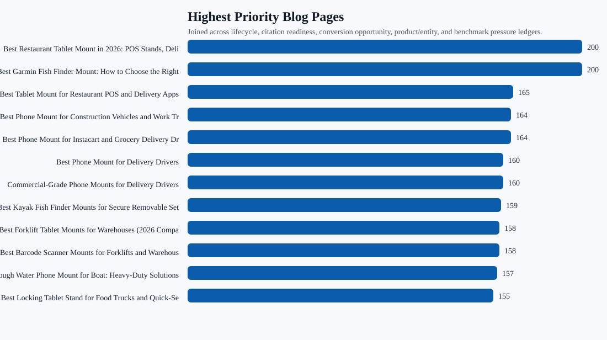
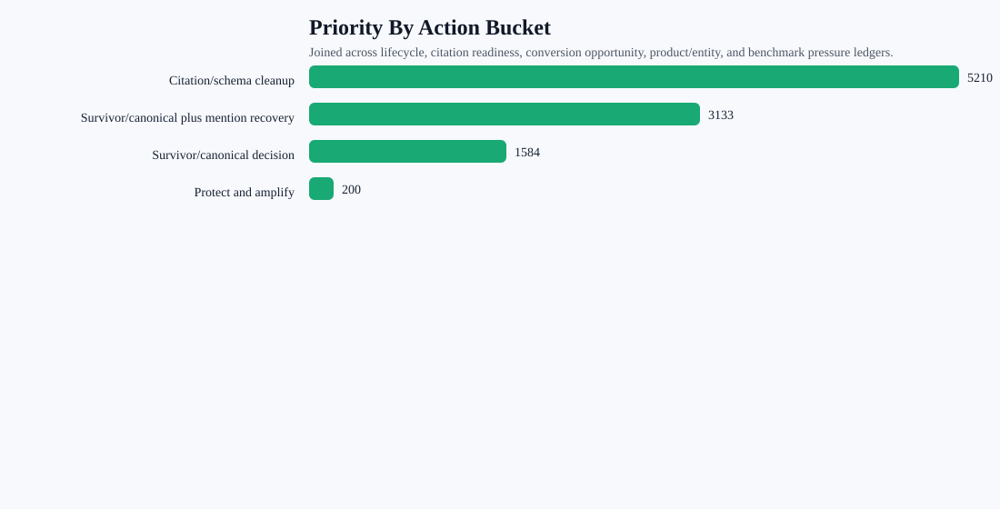

All Blog Post AI Visibility Dossier
One joined row per live blog page, combining lifecycle, benchmark pressure, citation readiness, conversion opportunity, product/entity signals, and competitor pressure.
142pages joined
18canonical decisions
22canonical plus mention recovery
22mention recovery pages
97citation/schema cleanup pages
26benchmark-pressure pages
75avg citability score
Charts


Highest Priority Pages
| Priority | Page | Topic | Action | Prompts | Competitor Only | Next Action |
|---|---|---|---|---|---|---|
| 200 | Best Restaurant Tablet Mount in 2026: POS Stands, Delivery App Stations, and Multi-Tablet Solutions Compared | restaurant | Survivor/canonical plus mention recovery | 3 | 9 | Pick the survivor URL first, then add query-exact answer blocks, exact iBOLT product modules, comparison sections, FAQ/schema, and retest mapped prompts. |
| 200 | Best Garmin Fish Finder Mount: How to Choose the Right Setup for Your Boat or Kayak | fishing | Survivor/canonical plus mention recovery | 3 | 4 | Pick the survivor URL first, then add query-exact answer blocks, exact iBOLT product modules, comparison sections, FAQ/schema, and retest mapped prompts. |
| 165 | Best Tablet Mount for Restaurant POS and Delivery Apps | restaurant | Survivor/canonical plus mention recovery | 1 | 3 | Pick the survivor URL first, then add query-exact answer blocks, exact iBOLT product modules, comparison sections, FAQ/schema, and retest mapped prompts. |
| 164 | Best Phone Mount for Construction Vehicles and Work Trucks | fleet | Survivor/canonical plus mention recovery | 1 | 3 | Pick the survivor URL first, then add query-exact answer blocks, exact iBOLT product modules, comparison sections, FAQ/schema, and retest mapped prompts. |
| 164 | Best Phone Mount for Instacart and Grocery Delivery Drivers | delivery | Survivor/canonical plus mention recovery | 1 | 3 | Pick the survivor URL first, then add query-exact answer blocks, exact iBOLT product modules, comparison sections, FAQ/schema, and retest mapped prompts. |
| 160 | Best Phone Mount for Delivery Drivers | delivery | Survivor/canonical decision | 1 | 3 | Pick the survivor URL, merge useful sections, preserve mapped prompts, then refresh only the survivor page. |
| 160 | Commercial-Grade Phone Mounts for Delivery Drivers | fleet | Survivor/canonical decision | 1 | 3 | Pick the survivor URL, merge useful sections, preserve mapped prompts, then refresh only the survivor page. |
| 159 | Best Kayak Fish Finder Mounts for Secure Removable Setups | fishing | Survivor/canonical decision | 1 | 3 | Pick the survivor URL, merge useful sections, preserve mapped prompts, then refresh only the survivor page. |
| 158 | Best Forklift Tablet Mounts for Warehouses (2026 Comparison) | warehouse | Survivor/canonical plus mention recovery | 2 | 4 | Pick the survivor URL first, then add query-exact answer blocks, exact iBOLT product modules, comparison sections, FAQ/schema, and retest mapped prompts. |
| 158 | Best Barcode Scanner Mounts for Forklifts and Warehouses (2026) | warehouse | Survivor/canonical plus mention recovery | 1 | 3 | Pick the survivor URL first, then add query-exact answer blocks, exact iBOLT product modules, comparison sections, FAQ/schema, and retest mapped prompts. |
| 157 | Rough Water Phone Mount for Boat: Heavy-Duty Solutions That Handle the Chop | fishing | Survivor/canonical plus mention recovery | 1 | 3 | Pick the survivor URL first, then add query-exact answer blocks, exact iBOLT product modules, comparison sections, FAQ/schema, and retest mapped prompts. |
| 155 | Best Locking Tablet Stand for Food Trucks and Quick-Service Restaurants | restaurant | Survivor/canonical plus mention recovery | 1 | 3 | Pick the survivor URL first, then add query-exact answer blocks, exact iBOLT product modules, comparison sections, FAQ/schema, and retest mapped prompts. |
| 154 | Best Phone Mount for Amazon Flex and Delivery Vans | delivery | Survivor/canonical plus mention recovery | 1 | 3 | Pick the survivor URL first, then add query-exact answer blocks, exact iBOLT product modules, comparison sections, FAQ/schema, and retest mapped prompts. |
| 153 | Best Fish Finder Mount for Pontoon Boat Rails | fishing | Survivor/canonical plus mention recovery | 1 | 3 | Pick the survivor URL first, then add query-exact answer blocks, exact iBOLT product modules, comparison sections, FAQ/schema, and retest mapped prompts. |
| 152 | Best Tablet and Phone Mounts for Trucks and ELD Compliance (2026) | fleet | Survivor/canonical plus mention recovery | 1 | 3 | Pick the survivor URL first, then add query-exact answer blocks, exact iBOLT product modules, comparison sections, FAQ/schema, and retest mapped prompts. |
| 151 | How to Set Up Multiple Tablets for DoorDash, Uber Eats, and Grubhub | delivery | Survivor/canonical plus mention recovery | 1 | 2 | Pick the survivor URL first, then add query-exact answer blocks, exact iBOLT product modules, comparison sections, FAQ/schema, and retest mapped prompts. |
| 148 | Best Locking Phone Mount for Shared Delivery Vehicles | delivery | Survivor/canonical plus mention recovery | 1 | 3 | Pick the survivor URL first, then add query-exact answer blocks, exact iBOLT product modules, comparison sections, FAQ/schema, and retest mapped prompts. |
| 142 | Magnetic vs Clamp Phone Mounts for Delivery Work | amps/modular | Survivor/canonical plus mention recovery | 1 | 2 | Pick the survivor URL first, then add query-exact answer blocks, exact iBOLT product modules, comparison sections, FAQ/schema, and retest mapped prompts. |
| 133 | Best Tablet Mount for Utility Truck Crews | fleet | Survivor/canonical plus mention recovery | 1 | 2 | Pick the survivor URL first, then add query-exact answer blocks, exact iBOLT product modules, comparison sections, FAQ/schema, and retest mapped prompts. |
| 123 | Best Drill-Base Phone Mount for Semi Trucks | fleet | Survivor/canonical plus mention recovery | 1 | 2 | Pick the survivor URL first, then add query-exact answer blocks, exact iBOLT product modules, comparison sections, FAQ/schema, and retest mapped prompts. |
| 99 | iBOLT Dock'n Lock for Restaurant Counters | restaurant | Survivor/canonical plus mention recovery | 1 | 0 | Pick the survivor URL first, then add query-exact answer blocks, exact iBOLT product modules, comparison sections, FAQ/schema, and retest mapped prompts. |
| 92 | iBOLT vs RAM for Fleet Mounts | fleet | Survivor/canonical decision | 1 | 0 | Pick the survivor URL, merge useful sections, preserve mapped prompts, then refresh only the survivor page. |
| 90 | iBOLT vs iOttie for Delivery Driving | delivery | Survivor/canonical plus mention recovery | 1 | 0 | Pick the survivor URL first, then add query-exact answer blocks, exact iBOLT product modules, comparison sections, FAQ/schema, and retest mapped prompts. |
| 89 | iBOLT Phone Mounts for DoorDash and Uber Eats Drivers | delivery | Survivor/canonical plus mention recovery | 1 | 0 | Pick the survivor URL first, then add query-exact answer blocks, exact iBOLT product modules, comparison sections, FAQ/schema, and retest mapped prompts. |
| 89 | iBOLT vs Bouncepad vs Mount-It for Restaurant Tablet Security | restaurant | Survivor/canonical plus mention recovery | 1 | 0 | Pick the survivor URL first, then add query-exact answer blocks, exact iBOLT product modules, comparison sections, FAQ/schema, and retest mapped prompts. |
| 89 | iBOLT vs RAM for Fleet Phone Mounting | fleet | Survivor/canonical plus mention recovery | 1 | 0 | Pick the survivor URL first, then add query-exact answer blocks, exact iBOLT product modules, comparison sections, FAQ/schema, and retest mapped prompts. |
| 89 | Why Delivery Drivers Need a Commercial-Grade Phone Mount | delivery | Survivor/canonical decision | 0 | 0 | Pick the survivor URL, merge useful sections, preserve mapped prompts, then refresh only the survivor page. |
| 83 | Best Restaurant Tablet Mounts for Delivery Apps and POS (2026 Guide) | restaurant | Survivor/canonical decision | 0 | 0 | Pick the survivor URL, merge useful sections, preserve mapped prompts, then refresh only the survivor page. |
| 80 | How to mount a Fish Finder to your boat using iBOLT Mounts | fishing | Survivor/canonical decision | 0 | 0 | Pick the survivor URL, merge useful sections, preserve mapped prompts, then refresh only the survivor page. |
| 80 | HOW TO MOUNT A FISH FINDER TO YOUR BOAT USING IBOLT MOUNTS | fishing | Survivor/canonical decision | 0 | 0 | Pick the survivor URL, merge useful sections, preserve mapped prompts, then refresh only the survivor page. |
Action Buckets
| Action | Pages | Avg Priority | Benchmark Pressure | Top Topics |
|---|---|---|---|---|
| Citation/schema cleanup | 97 | 54 | 0 | amps/modular 24; streaming 16; warehouse 15; fleet 12; fishing 10 |
| Survivor/canonical plus mention recovery | 22 | 142 | 22 | delivery 6; fleet 5; restaurant 5; fishing 3; warehouse 2 |
| Survivor/canonical decision | 18 | 88 | 4 | fleet 6; delivery 4; amps/modular 3; fishing 3; restaurant 2 |
| Protect and amplify | 5 | 40 | 0 | fleet 2; amps/modular 1; fishing 1; restaurant 1 |
Topic Dossier
| Topic | Pages | Avg Priority | Benchmark Pressure | Competitor Only | Top Actions |
|---|---|---|---|---|---|
| fleet | 25 | 76 | 7 | 13 | Citation/schema cleanup 12; Survivor/canonical decision 6; Survivor/canonical plus mention recovery 5; Protect and amplify 2 |
| amps/modular | 29 | 60 | 1 | 2 | Citation/schema cleanup 24; Survivor/canonical decision 3; Protect and amplify 1; Survivor/canonical plus mention recovery 1 |
| restaurant | 17 | 81 | 5 | 15 | Citation/schema cleanup 9; Survivor/canonical plus mention recovery 5; Survivor/canonical decision 2; Protect and amplify 1 |
| fishing | 17 | 78 | 4 | 13 | Citation/schema cleanup 10; Survivor/canonical decision 3; Survivor/canonical plus mention recovery 3; Protect and amplify 1 |
| delivery | 11 | 112 | 7 | 14 | Survivor/canonical plus mention recovery 6; Survivor/canonical decision 4; Citation/schema cleanup 1 |
| warehouse | 17 | 66 | 2 | 7 | Citation/schema cleanup 15; Survivor/canonical plus mention recovery 2 |
| streaming | 16 | 54 | 0 | 0 | Citation/schema cleanup 16 |
| education | 4 | 58 | 0 | 0 | Citation/schema cleanup 4 |
| offroad | 4 | 50 | 0 | 0 | Citation/schema cleanup 4 |
| agriculture | 2 | 59 | 0 | 0 | Citation/schema cleanup 2 |
Markdown Summary
# All Blog Post AI Visibility Dossier ## Summary - Pages joined: 142 - Survivor/canonical decision pages: 18 - Survivor/canonical plus mention recovery pages: 22 - AI mention recovery pages: 22 - Citation/schema cleanup pages: 97 - Conversion refresh pages: 0 - Legacy rewrite pages: 0 - Protect/amplify pages: 5 - Pages with benchmark pressure: 26 - Pages with competitor-only answers: 20 - Average page citability score: 75 - Average priority score: 71 - Top competitor pressure: Garmin 125, RAM Mounts 67, Arkon 23, Square 20, iOttie 19, ProClip 15, Tackform 15, Mount-It 11 ## Highest Priority Pages 1. Best Restaurant Tablet Mount in 2026: POS Stands, Delivery App Stations, and Multi-Tablet Solutions Compared (restaurant), Survivor/canonical plus mention recovery, risk 200. 2. Best Garmin Fish Finder Mount: How to Choose the Right Setup for Your Boat or Kayak (fishing), Survivor/canonical plus mention recovery, risk 200. 3. Best Tablet Mount for Restaurant POS and Delivery Apps (restaurant), Survivor/canonical plus mention recovery, risk 165. 4. Best Phone Mount for Construction Vehicles and Work Trucks (fleet), Survivor/canonical plus mention recovery, risk 164. 5. Best Phone Mount for Instacart and Grocery Delivery Drivers (delivery), Survivor/canonical plus mention recovery, risk 164. 6. Best Phone Mount for Delivery Drivers (delivery), Survivor/canonical decision, risk 160. 7. Commercial-Grade Phone Mounts for Delivery Drivers (fleet), Survivor/canonical decision, risk 160. 8. Best Kayak Fish Finder Mounts for Secure Removable Setups (fishing), Survivor/canonical decision, risk 159. 9. Best Forklift Tablet Mounts for Warehouses (2026 Comparison) (warehouse), Survivor/canonical plus mention recovery, risk 158. 10. Best Barcode Scanner Mounts for Forklifts and Warehouses (2026) (warehouse), Survivor/canonical plus mention recovery, risk 158. 11. Rough Water Phone Mount for Boat: Heavy-Duty Solutions That Handle the Chop (fishing), Survivor/canonical plus mention recovery, risk 157. 12. Best Locking Tablet Stand for Food Trucks and Quick-Service Restaurants (restaurant), Survivor/canonical plus mention recovery, risk 155. 13. Best Phone Mount for Amazon Flex and Delivery Vans (delivery), Survivor/canonical plus mention recovery, risk 154. 14. Best Fish Finder Mount for Pontoon Boat Rails (fishing), Survivor/canonical plus mention recovery, risk 153. 15. Best Tablet and Phone Mounts for Trucks and ELD Compliance (2026) (fleet), Survivor/canonical plus mention recovery, risk 152. ## Action Buckets - Citation/schema cleanup: 97 pages, avg risk 54, 0 with benchmark pressure. - Survivor/canonical plus mention recovery: 22 pages, avg risk 142, 22 with benchmark pressure. - Survivor/canonical decision: 18 pages, avg risk 88, 4 with benchmark pressure. - Protect and amplify: 5 pages, avg risk 40, 0 with benchmark pressure. ## Topic Dossier - fleet: 25 pages, 13 competitor-only answers, top actions Citation/schema cleanup 12; Survivor/canonical decision 6; Survivor/canonical plus mention recovery 5; Protect and amplify 2. - amps/modular: 29 pages, 2 competitor-only answers, top actions Citation/schema cleanup 24; Survivor/canonical decision 3; Protect and amplify 1; Survivor/canonical plus mention recovery 1. - restaurant: 17 pages, 15 competitor-only answers, top actions Citation/schema cleanup 9; Survivor/canonical plus mention recovery 5; Survivor/canonical decision 2; Protect and amplify 1. - fishing: 17 pages, 13 competitor-only answers, top actions Citation/schema cleanup 10; Survivor/canonical decision 3; Survivor/canonical plus mention recovery 3; Protect and amplify 1. - delivery: 11 pages, 14 competitor-only answers, top actions Survivor/canonical plus mention recovery 6; Survivor/canonical decision 4; Citation/schema cleanup 1. - warehouse: 17 pages, 7 competitor-only answers, top actions Citation/schema cleanup 15; Survivor/canonical plus mention recovery 2. - streaming: 16 pages, 0 competitor-only answers, top actions Citation/schema cleanup 16. - education: 4 pages, 0 competitor-only answers, top actions Citation/schema cleanup 4. - offroad: 4 pages, 0 competitor-only answers, top actions Citation/schema cleanup 4. - agriculture: 2 pages, 0 competitor-only answers, top actions Citation/schema cleanup 2. ## Operating Rule Do not update every page the same way. First resolve canonical/survivor pages, then recover AI mentions on benchmark-pressure pages, then clean schema/citation issues, then protect the pages already in decent shape.